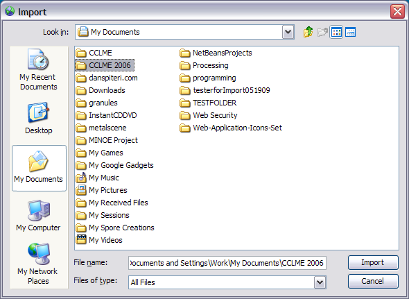
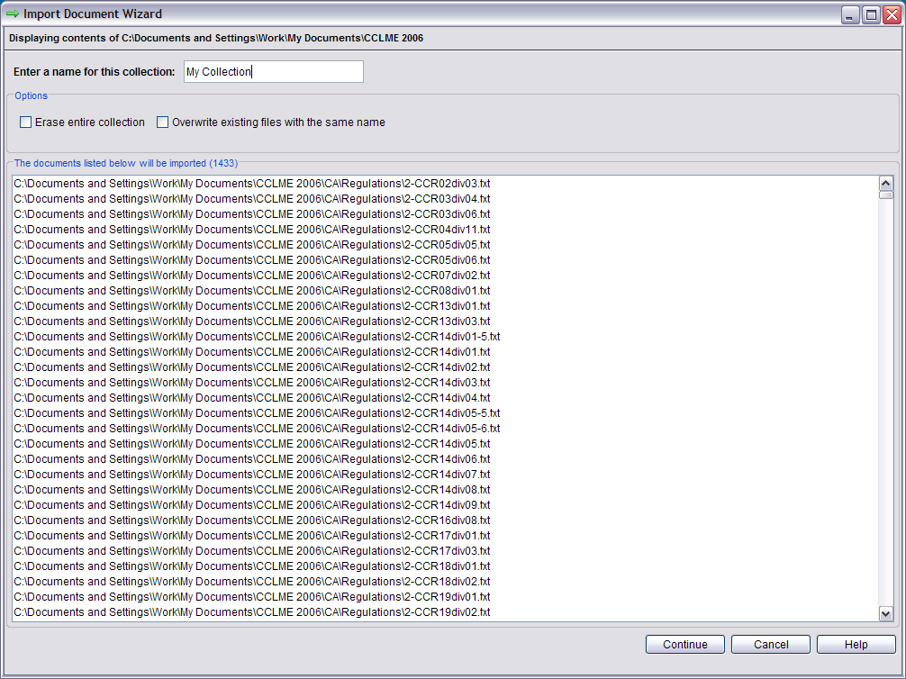

The Import Documents module, accessed from the main menu, allows you to update, change, or remove the existing document base. If you have a meta data file, the information in this file will be imported as well. Otherwise, you can add information after importing through the Meta Data Editor.
After pressing the Import Documents button, a window will appear asking you to select the folder that contains your new documents. Only documents ending with the extension .txt (text) are processed.

After choosing your import folder, MINOE will search this folder and all sub-folders for valid text files, displaying the files to be imported in a new window.

Erase Entire Collection - Choosing this option will delete the documents currently in the program. The documents you import will be the only documents left to run analyses on.
Overwrite Existing Files With The Same Name - Use this option if you have newer documents to import and you'd like to overwrite existing documents of the same name. Leave this unchecked if you want to skip importing any files that are already in the program.
Meta data is the information that describes the documents that you are importing. In order for MINOE to recognize the meta data file it must be a comma-separated file, named either "fileinfo.csv" or "fileinfo.txt". Place the file in the folder containing all of your new documents that you wish to import.
Name the columns in the file as follows (in bold):
* - indicates required values.
Note: "pipe-separated" means that you may enter multiple values in this field, separated by a "pipe" | character. (Ex: ocean|water|river).
If you do not have meta data readily available, you may enter it after importing via the Meta Data Editor.
If you have a large collection of documents, it may take a minute or two to import all of the data and index the collection.